Archived documentation (backup: 4 September 2026). Commands and wallet interfaces may differ in current releases.
IMPORTANT! When using a web wallet like this one, please make 100% sure that you're entering the right URL which is
Current ZHC Wallet (interface differs from the archived guide)
There is no other URL being used for the web wallet, please be safe and verify the green padlock with "Secure" in the URL field which validates the site:
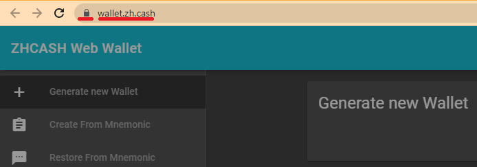
Welcome to the ZHCash web wallet user documentation which will show
- Introduction to the Web Wallet
- How to generate a new wallet or restore addresses from other wallets
- How to receive and send ZHCash coins, sending with Ledger, Safe Send
- How to receive and send ZRC20 tokens
- How to add a new ZRC20 token to the wallet
- How to publish smart contracts
Introduction to the Web Wallet
The ZHCash web wallet runs in your browser and connects to the ZHCash network through a full node interface. The web wallet does not store your private keys so you must manage those with a downloaded Key File or seed words. This is completely your responsibility.
The web wallet may be launched by navigating to the site listed above and clicking on the Web button:
Scroll down and click the large blue Visit Website button:
Upon loading the web wallet, we get this very important warning, please take a few seconds and read it.
Welcome to the ZHCash web wallet! As shown below the left panel gives a menu with various options to create or restore a wallet, and other actions. The top of the menu gives seven choices for creating or restoring a wallet. The bottom of the menu gives various operations and configuration choices. The center part of the wallet page presents forms for data entry, viewing and management of the wallet assets.
The menu option Settings will allow selection of language and setting the wallet to work on Mainnet or Testnet. Select the desired network before restoring a wallet or entering a password.
The ZHCash web wallet works with ZHCash standard addresses which begin with a "Q" (legacy), and is not compatible with SegWit (Segregated Witness) addresses that begin with an "M" (p2sh-segwit) or "qc1" (bech32).
Generate New Wallet - Restore Wallet
There are 7 ways to generate or restore a wallet.
- Generate new Wallet creates a new address and downloads a Key File
- Create from Mnemonic creates 12 seed words and a new address
- Restore from Mnemonic restores an address using 12 seed words from a desktop wallet
- Restore from WIF restores an address from a private key
- Restore from Mobile Wallet restores an address from 12 seed words from a compatible mobile wallet
- Restore from Key File restores an address from a Key File created by the web wallet
1. Generate New Wallet
Now let's choose the first option on the menu screen above and click on the red GENERATE NEW WALLET button. Next, you will enter a password which will be used to create a series of private keys. Write down a new long and strong password, enter the password and click the blue CONFIRM button:
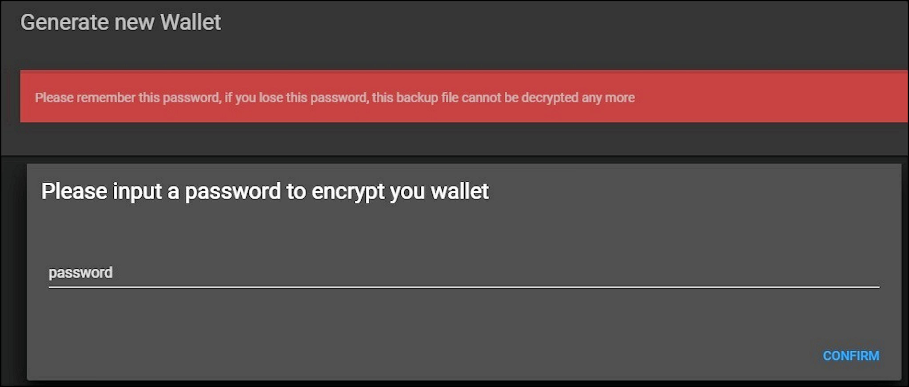
Next click the large green button to download the Key File:
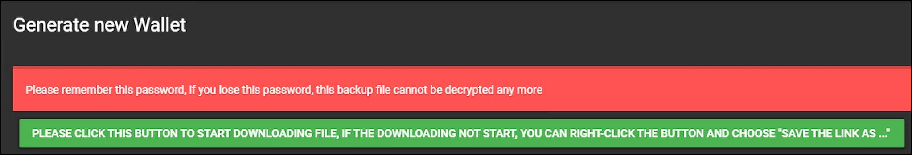
The Key File will download to your computer, save the file in a location you can find again and back up the file offline. The key file name will have a format like "1529379436736.txt" where the long number is the file creation time as Unix epoch time in milliseconds. You will need this Key File and the password to reload the wallet. If you lose the Key File or password, the funds in your wallet will be lost.
The View Wallet Info page will appear for your wallet where you can see:
- Address - receiving address for the wallet
- Balance - confirmed coins
- Unconfirmed Balance - coins waiting to be confirmed in the next block
- Private Key - the private key for this address
2. Create from Mnemonic
Click on the menu option Create from Mnemonic, GENERATE NEW WALLET, enter a password and click CONFIRM. The wallet will create a new address from 12 random seed words:
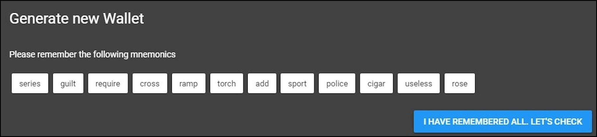
Please write down and save these seed words, only you as the wallet user have access to these seed words (seed words and private keys aren't stored on the server, if you lose these seed words you'll lose access to your funds!).
Next you have to enter the seed words manually to confirm you have saved them. Click on the blue button I HAVE REMEMBERED ALL. LET'S CHECK, enter your password, re-enter the seed words and click the green CONFIRM button:
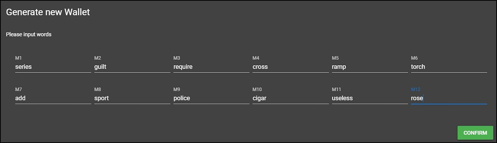
Then you will see the View Wallet Info page as shown above. You may want to download a Key File for the wallet using the menu option Dump as Key File which will give another way to restore the wallet as described in step 6 below.
3. Restore from Mnemonic
For the menu option Restore from Mnemonic you will enter the seed words saved in step 2 above. Make sure you enter the seed words correctly (with no typos or additional blank spaces), click the green CONFIRM button:
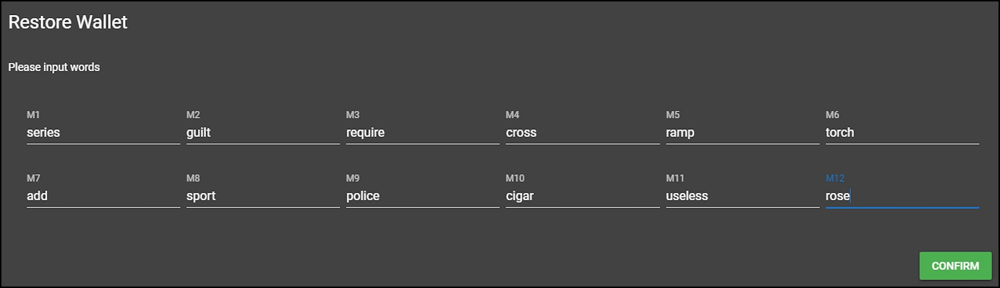
After entering a new password, you will see the View Wallet Info page. Verify that the expected address was created. You may want to back up the wallet using the menu option Dump As Key File.
4. Restore from WIF
This choice allows restoring the wallet from a Wallet Input Format (WIF) private key such as from the web wallet, ZHCash Core wallet or ZHCash Electrum wallet. A WIF private key will be 52 characters long and has error checking and encoding (to reduce size) as compared with an original private key, which will be 64 hexadecimal characters.
Copy the WIF private key from another wallet. Select the menu option Restore from WIF, paste the private key into the WIF field and click the green CONFIRM button:
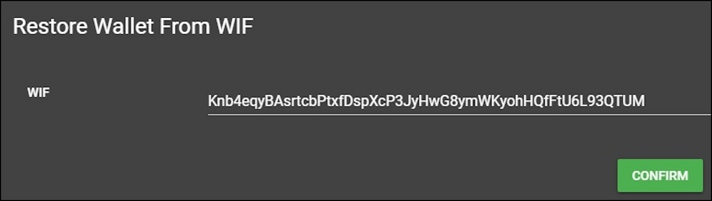
The View Wallet Info page will be displayed. Verify you restored the expected address. You may want to back up the wallet using the menu option Dump As Key File.
5. Restore from Mobile Wallet
Restore from Mobile Wallet allows restoring a wallet address from a compatible mobile wallet such as the ZHCash mobile wallet, Qbao wallet, or the ZHCash Electrum wallet (if the ZHCash Electrum wallet was initialized to be compatible with the ZHCash mobile wallets).
Select the menu option Restore from Mobile Wallet and enter the 12 seed words from your other wallet. Enter the words carefully in lower case (never in UPPERCASE) and make sure there are no blank spaces after the words, and click the green CONFIRM button:
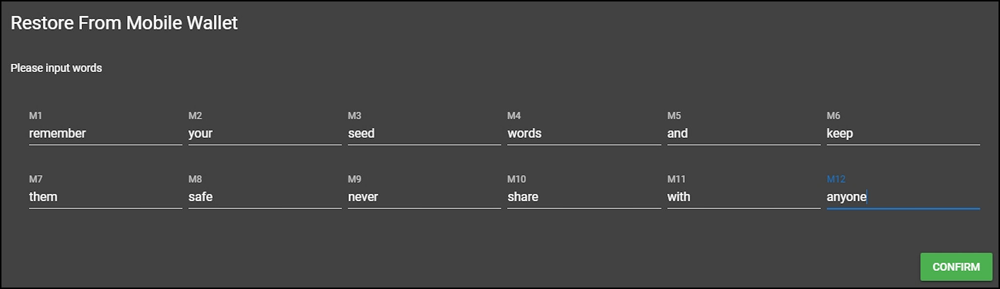
Next, choose the address to restore, it will probably be the top address row unless you were using multiple addresses on your mobile. If you don't see the correct address, reenter the seed words carefully. Click the green CHOOSE button for the desired address:
The View Wallet Info page will be displayed. You may want to back up the wallet using the menu option Dump As Key File.
6. Restore from Key File
Select the menu option Restore from Key File, UPLOAD, select the key file to upload and click Open. Enter your password and click the blue CONFIRM button. The View Wallet Info page will be displayed.
Receive and Send ZHCash Coins
Receive
You can receive coins for the web wallet by sending them to the address of the wallet. Before you send any coins to the wallet make sure you can close and reopen the wallet with the same receive address. Using the menu option Dump as Key File and Restore from Key File is a safe way to do this. Using the menu option to restore from seed words to reopen the wallet is riskier because entering a typo for the seed words or password will create an unexpected random address.
On the View Wallet Info page click on the blue address COPY button and then paste this address as the receiving address in the sending wallet or account, and then send the coins. Wait a few minutes for the next block to be published and reload the web wallet to see the new balance. You can also click on the menu option View Wallet Txs to see the receiving transaction:
Send
From your receiving wallet or account, copy the receiving address. On the web wallet menu, click Send and paste the receiving address into the Address* field, then enter the amount to send in the Amount* field (if you are sending an amount less than 1.0, use a leading zero, like "0.5", not ".5"). You can leave the Fee field set at the default of 0.01 (or set a lower fee if you understand how to do this) and click the green CONFIRM button:
The Please enter address again (Double check) page will be displayed. Copy and paste the receiving address into the Address field and click the blue CONFIRM button:
The You are going to send page will be displayed, after verifying the information click the blue CONFIRM button:
At the bottom of the screen you will see the green confirmation bar with a link to show the transaction in the Explorer:
The View Wallet Info page will display an Unconfirmed balance for the amount being sent (+ fee).
After the transaction is published in the next block you can reload the wallet to see the updated balance and also see the transaction using the menu option View Wallet Txs.
Safe Send
A basic ZHCash transaction is composed of three steps:
- Compose the base transaction: from, to, amount, fee.
- Sign the transaction using the private key.
- Transmit the signed transaction to the network.
"Safe Send" isolates these steps between two computers/wallets, where step 2 is performed with an offline wallet whose private keys are never exposed to the internet. The web wallet "Safe Send" walks through these 3 steps to make a very safe transaction using the offline wallet.
Setup Offline Wallet
For a Safe Send, first set up the offline wallet by getting a copy of the web wallet and browser software. This example will use Google Chrome on Windows, and you can adjust to your preferred browser and operating system.
On the online computer, using the Chrome browser, go to Current ZHC Wallet (interface differs from the archived guide). In the browser upper right-hand corner select the three vertical dots for menu, select More tools then Save page as… to save the ZHCash Web Wallet HTML file. This file contains all the JavaScript code to run the web wallet:
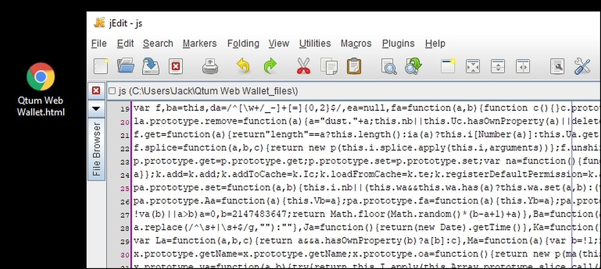
The Web Wallet HTML fileTo make an offline copy of Chrome, navigate to find the Chrome install folder on your computer. For Windows it is typically in Program Files (x86) - Google:
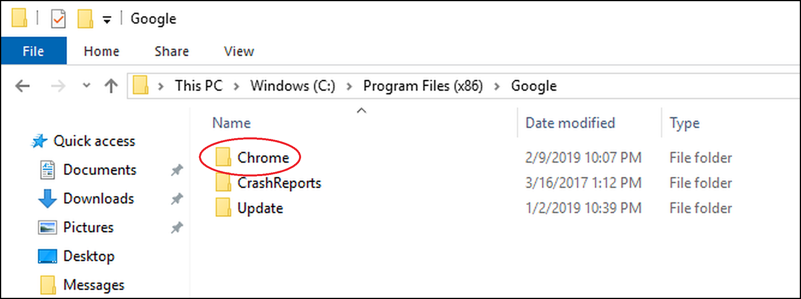
Copy Chrome folderCopy the Chrome folder and Web Wallet HTML file to a USB thumb drive and then copy these to the offline computer.
This gives a copy of the current Chrome and web wallet for the offline computer, and will not get any future version updates. You can do an update with these same steps, but it should not be necessary for these basic operations.
Launch the wallet in Offline Mode
On the offline computer, launch the Chrome browser: in the copied Chrome folder select User Data - Application - Chrome.exe:
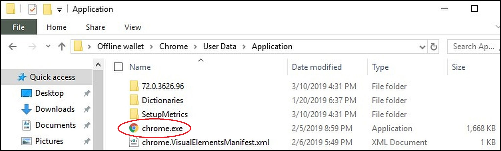
(here in a folder called "Offline wallet")Launch the offline web wallet
With the cursor in the Chrome URL address bar press Control - "O" (for Open) and then navigate to and Open the ZHCash Web Wallet.html file:
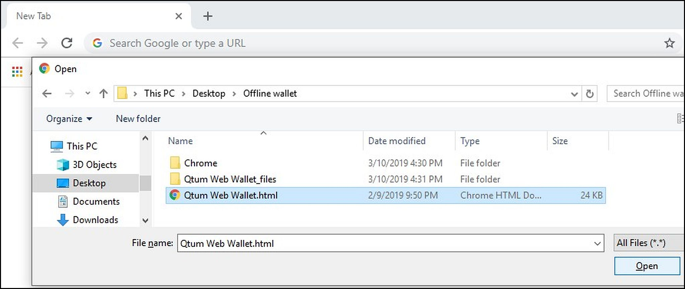
Using the web wallet menu select Settings and in the Mode dropdown select Offline and CONFIRM:
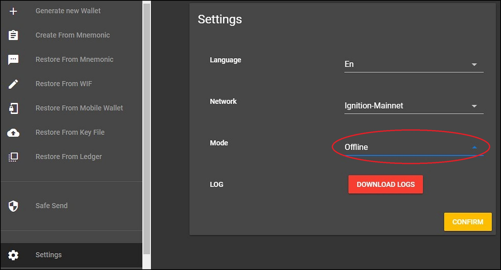
Note the gold header for the wallet in offline mode. From this point, you can generate a new wallet and save (and backup) the key file. The menu will show Request Payment and the Request Payment page will show the receiving address for the offline wallet:
Copy the receiving address to a text file and copy to the USB thumb drive for transfer to the online computer. Now you can send ZHCash to this address to fund the offline wallet.
This works to send ZHCash to the offline wallet address because ZHCash coins are actually stored as unspent transactions on the blockchain (no coins are ever stored in any wallet itself). However the offline wallet holds the private key for its address, and only the offline wallet can sign transactions to send ZHCash from its address.
Now we can use the 3 transaction steps for a Safe Send.
- Compose the base raw transaction with the online wallet.
From the online wallet menu select Safe Send and for step 1 fill in the addresses and amount. From Address* is the address of the offline wallet. The online wallet will query the blockchain for the "From Address" and select a previous transaction or transactions that hold sufficient ZHCash for the amount being sent. Use 0.01 for the Fee unless you know how to choose lower fees.
After filling in all the fields, press CONFIRM, reenter the To Address*, press CONFIRM and CONFIRM again to create the raw transaction file:
The online wallet will create a raw transaction text file, for example:
{"from":"<ZHCash address>","to":"<ZHCash address>","amount":"5.0","fee":"0.01",
"utxo":[{"address":"<from ZHCash address>","txid":"<transaction ID>","confirmations":4,
"isStake":false,"amount":10,"value":1000000000,"hash":"<hash checksum>","pos":0}]}
Here the online wallet has selected an appropriate unspent transaction owned by the "From Address" which holds 10.0 ZHCash.
You must leave the online wallet running at the end of step 1 while completing step 2 with the offline computer, then return for step 3. Exiting the online wallet at this point and reloading for step 3 will cancel the sequence.
Copy the raw transaction file to the offline wallet computer. For the offline wallet launch Chrome and the wallet in offline mode as in "Launch the Offline Wallet" above. Use the menu option Restore from Key File to load the previous address. The offline wallet will not know or display any balance.
- On the offline wallet menu select
Safe Sendand on the Safe Send page in step 1 pressNEXTto begin step 2.
In step 2 select UPLOAD and open the raw transaction file copied from the online wallet. You will see the transaction fields as entered on the online computer. Select CONFIRM, reenter the To Address* and CONFIRM, and then CONFIRM again to create the signed tx file:
The offline wallet will generate a signed tx file, for example:
{"from":"<ZHCash Address>","to":"<ZHCash Address>","amount":"5.0",
"fee":"0.01","rawTx":"<raw hex transaction code>"}
Copy this file to a USB thumb drive and transfer to the online wallet computer.
Note that the offline wallet is completely disconnected from the internet, and can only sign the transaction using its private keys. The offline wallet cannot even show the balance for its address, but you can see the balance with the Explorer.
- Back on the online wallet (still on the Safe Send page) on step 2 select
NEXTto advance to step 3.
On step 3 select UPLOAD and open the signed tx file. You will see the transaction fields as entered in step 1. Press CONFIRM, reenter the Send To* address and select CONFIRM, and CONFIRM again to send the transaction to the network:
At the bottom of the screen you will see the green confirmation bar, and after the transaction is published in the next block select the Explorer link to see the transaction on the blockchain.
Send and Receive ZRC20 Tokens
If you haven't done this, make sure you can back up the wallet using menu option Dump as Key File, and then reopen to the same address using Restore from Key File.
Receive ZRC20 Tokens
To receive ZRC20 tokens, on the web wallet View Wallet Info page and copy the Address field by clicking the blue COPY button, paste this address into the sending wallet or exchange, and send the tokens. After the next block publishes, reload the wallet to see the tokens:
Send ZRC20 Tokens
To send ZRC20 tokens you must have sufficient ZHCash coins in the address tied to that token. The web wallet default fee for sending tokens is 0.00000040 gas price x 250,000 gas = 0.1 ZHCash plus the default transaction fee of 0.01 ZHCash, for a total fee of 0.11 ZHCash. You can use these default values unless you understand how to set lower values, but don't worry, any excess gas will be refunded as a mined amount (the mined amount must mature for 500 blocks before it can be sent or used for gas/fees).
Adding a ZRC20 Token
The web wallet will has built-in capability for popular ZRC20 tokens, and you can add additional tokens by entering the token's smart contract information. For example, if you want to add the XYZ token, find that token on the Explorer ZHCash.info, copy the contract Address Hash field:
On the web wallet select the menu option Send, click the drop down next to "ZHCash", scroll to the bottom of the Coin/Token list and click the More... button:
Paste the Address Hash copied from the Explorer into the Token Contract Address field and click the blue SEARCH button:
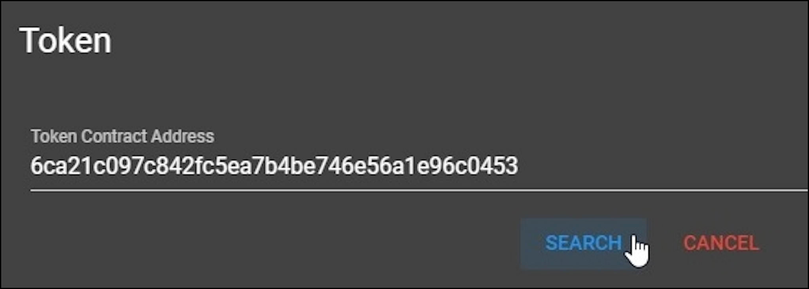
The contract details should be displayed on the Token page, verify and click the CONFIRM button to add this token to your wallet. The new token will be available in the wallet for 30 days, after which you can add it again if needed.
How to Publish Smart Contracts
The wallet has the capability to publish smart contracts creating ZRC20 tokens with Create Token or any other contract using Create Contract.
Create Token
The Create Token menu option gives an easy way to create ZRC-20 tokens using a built-in contract creation transaction.
Select Create Token on the menu and fill in the Create Token form:
For Token Name enter a descriptive name, here “My Test Token”. For Token Symbol enter an appropriate symbol. The symbols are not unique, you can reuse any existing symbol name or make a new one.
Leave Decimals set to the recommended 8 unless you have a good reason to change. With 8 decimals the tokens will be created in Satoshis, where the amount for 1.0 will be represented by 100,000,000 in the smart contract (move the decimal point 8 places to the left to convert Satoshis to units).
Enter the Total Supply of tokens to create, 100 million is a typical number.
Leave Gas Price, Gas Limit and Fee set as is, unless you understand how to make changes. If Gas Limit is set too low, the contract creation transaction will run out of gas and fail. For the default settings to the total fee for the token creation contract will be 2,500,000 x 0.00000040 + 0.01 = 1.01 ZHCash, so the wallet must have at least this amount and any excess gas will be refunded.
Press the green CONFIRM button. On the Do you confirm to create this Token screen review the raw transaction and press the blue CONFIRM button.
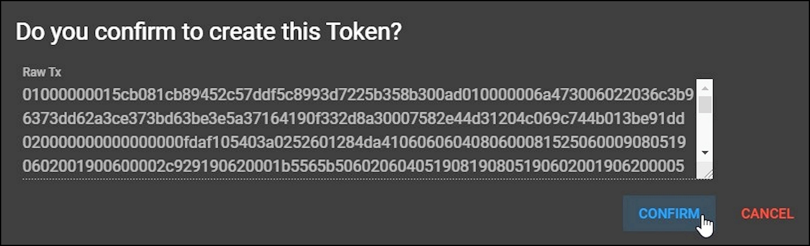
You will see the green Successful send bar at the bottom of the screen:
Follow the link to see the contract creation transaction on the blockchain (after the next block is published).
Note that contracts are referenced using their address hash which is a 40-character hexadecimal address and just another way to represent a ZHCash “Q” address.
From this point, you can add the new token to your wallet as shown above Adding a ZRC20 Token.
Create Contract
Create Contract allows publishing of any kind of smart contract. To create the contract, start by writing Solidity code and compile to bytecode using a web IDE (Integrated Development Environment) like qmix or remix or a command line tool like solar.
Here is an example using the remix website at http://remix.ethereum.org for a contract which tracks name and age:
pragma solidity >= 0.5.1 < 0.6.0; // use only these versions of Solidity
contract NameAndAge{
string private name = "null";
uint256 private yearsAge = 0;
// set the age - transaction, requires gas
function setAge(uint256 newAge) public {
yearsAge = newAge;
}
// set the name - transaction, requires gas
function setName(string memory newName) public {
name = newName;
}
// get the age - not a transaction, no gas required
function getAge() public view returns (uint256) {
return yearsAge;
}
// get the name - not a transaction, no gas required
function getName() public view returns (string memory) {
return name;
}
}
To enter this contract into the wallet, the source code needs to be compiled to bytecode and the ABI (Application Binary Interface) created.
Copy and paste the Solidity code into remix and press the Bytecode button to copy the bytecode into the clipboard, then save the results in a text file.
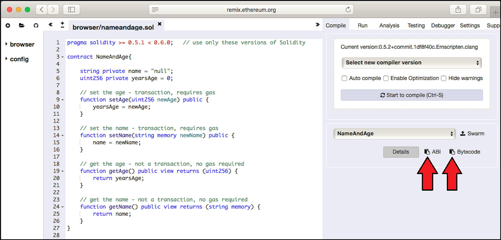
The actual bytecode (outlined in red below) begins with “6080” and is about 1,200 bytes in length.
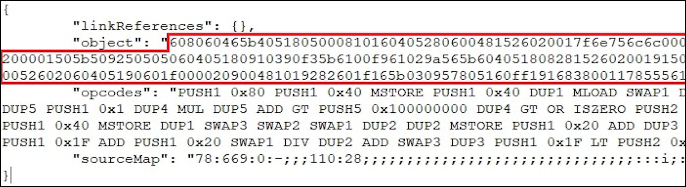
Also, press the ABI button to copy the ABI text into the clipboard and save to the same text file with the bytecode.
Now we can publish the contract. On the web wallet menu select Create Contract, copy and paste the bytecode (the hex string given by "object" as shown above) into the Byte Code field. Leave the Gas Price, Gas Limit and Fee fields set for the default unless you understand how to change these. The default settings will give a fee of 2,500,000 x 0.0000004 + 0.01 = 1.01 ZHCash. Your wallet will need at least this much ZHCash to publish the contract. Press the green CONFIRM button to continue:
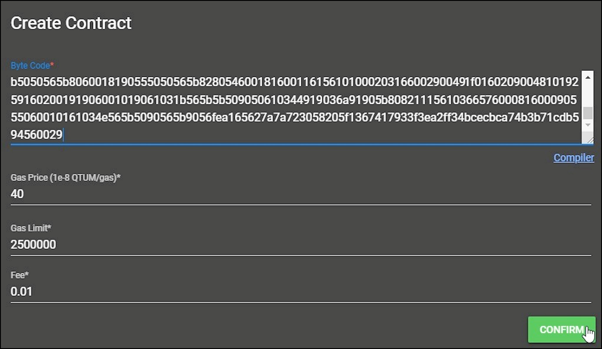
On the next page Do you confirm to publish this contract? review the raw transaction and press the blue CONFIRM button:
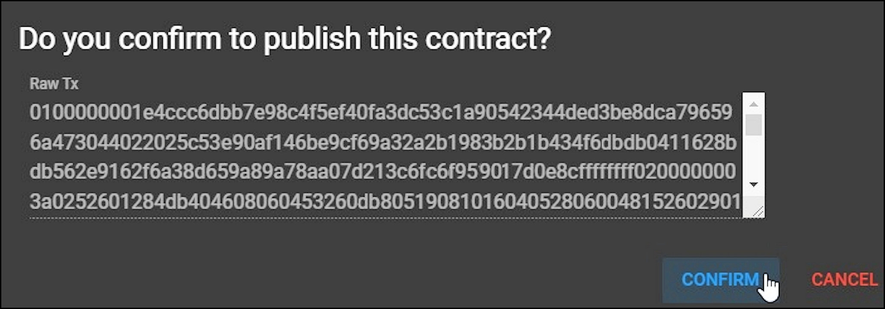
See the green Successful send bar at the bottom of the screen. You can follow the link to see the contract create transaction on the Explorer (after the next block is published).
From the contract creation transaction on the Explorer, copy the Contract Address (40 hex characters) for use in the next steps:
Send to Contract
Send to Contract is used to change the memory values of the contract, for example, transferring tokens or changing storage for variables in the contract’s state database. The send to contract transaction requires a fee and gas payment, so you will need sufficient ZHCash in the wallet. Continuing the above example we will send to contract to set the name and age.
On the menu, press Send to Contract. On the Send to Contract page copy and paste the Contract Address and the ABI into their fields (the ABI for this contract is about 60 lines of text, the bottom few lines are visible in the scrolling window below).
On the Method row (not shown below), click the drop-down arrow and select the setName method, and in the newName field enter the name to set, here "Nakamoto". Press the green CONFIRM button to continue.
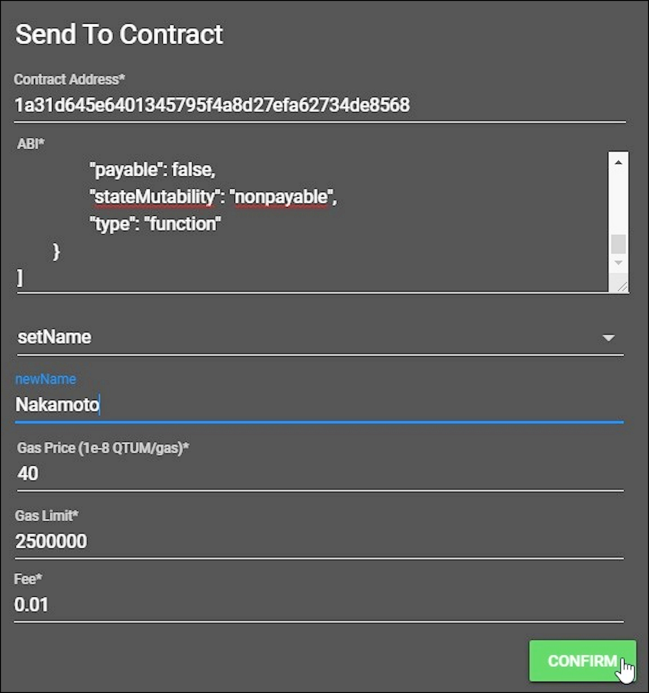
On the next Do you confirm? page review the raw transaction and press the blue CONFIRM button to send the transaction:
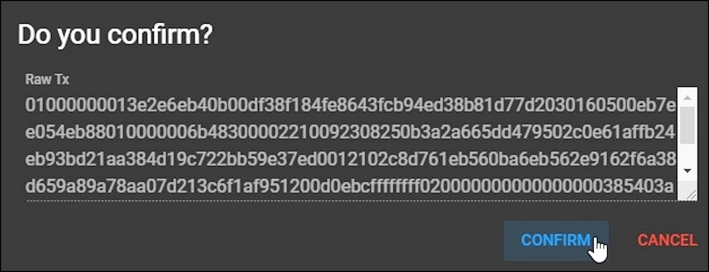
See the green Successful send bar, and you can follow the link to the Explorer to see the transaction (after the next block is published).
Use the same Send to Contract steps to select the setAge method, enter a newAge of 25 and send the transaction.
Contract Call
Calling the contract reads state variables in the local copy of the blockchain (in the ZHCash State database) for the web wallet’s server node (without the need for a transaction using gas) and gives an immediate result since there is no need to wait for the next block to publish. For contract calls enter the contract address and the ABI interface.
On the web wallet menu select Contract Call. On the Contract Call page paste in the contract address and ABI. On the Method row (not shown below) press the drop-down arrow and select the getName method. Notice there are no fields for gas or fees since none are required. Press the green CONFIRM button:
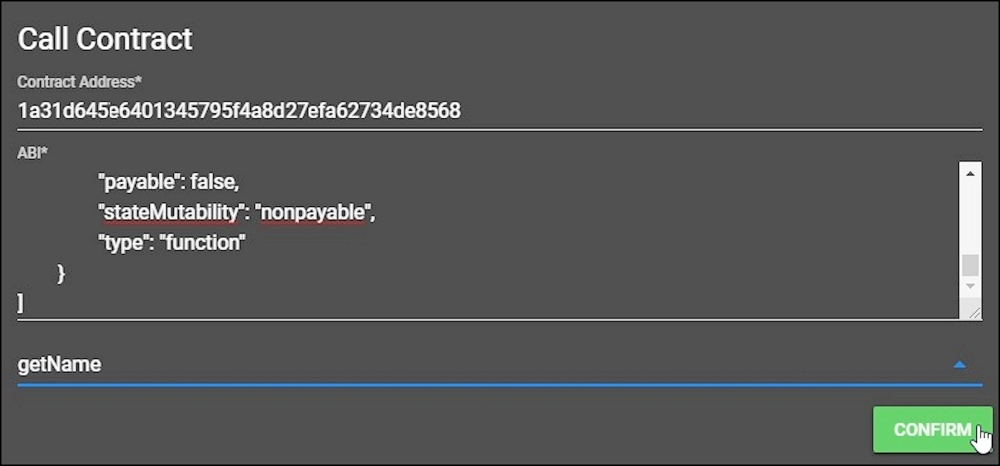
The Result will come back immediately:
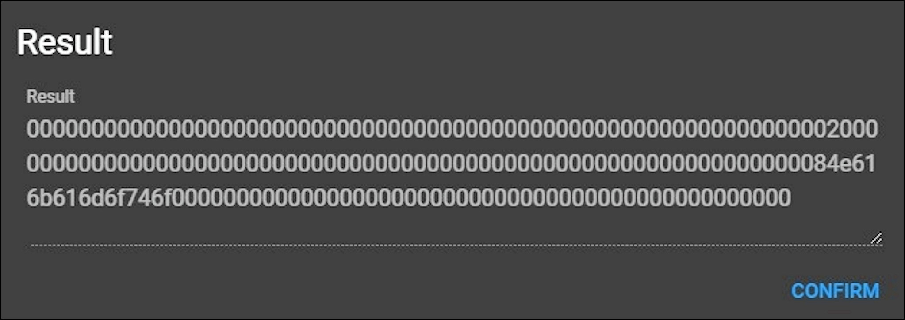
The contract data is in hexadecimal, converting “4e616b616d6f746f” hex to ASCII gives “Nakamoto” as set above.
Using the same Call Contract steps to select getAge will return:
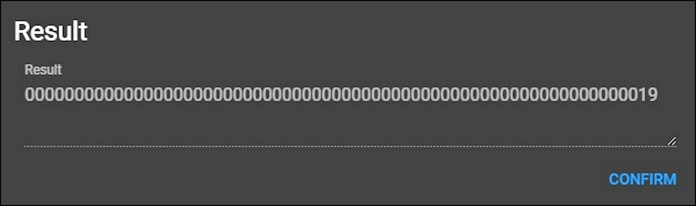
Converting hexadecimal 19 to decimal gives 25 as set above.